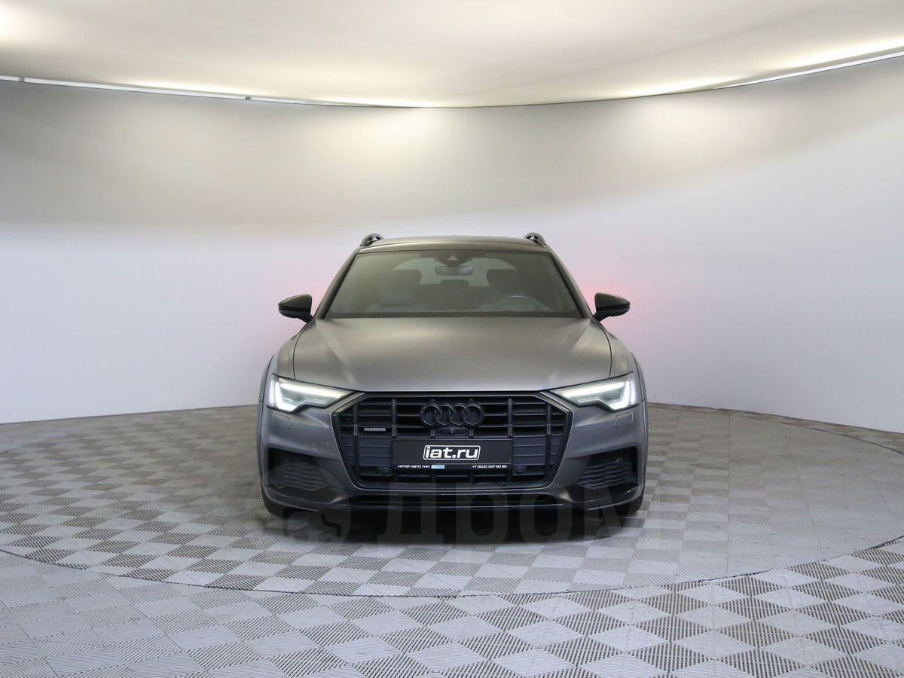
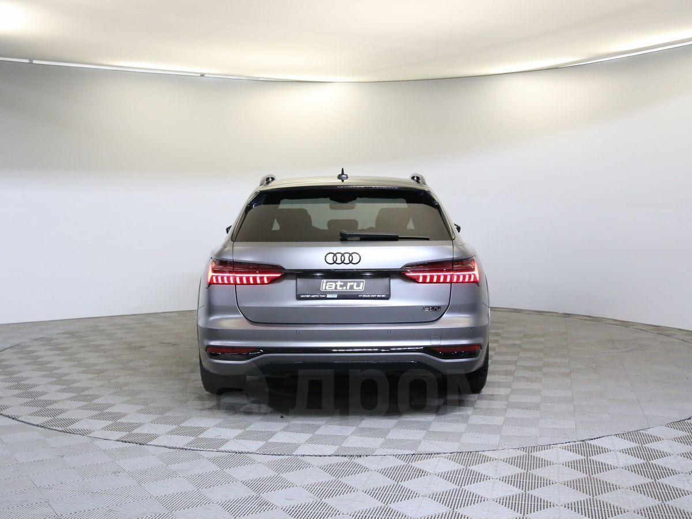

О модели

Audi A6 allroad quattro C8 — это универсальный внедорожный универсал с адаптивной пневмоподвеской, системой полного привода quattro и мощными двигателями, обеспечивающими комфорт и проходимость на любых дорогах.
Характеристики
Двигатель: 3.0L V6 TFSI / 3.0L V6 TDI
Мощность: 340 л.с. (бензин) / 231-349 л.с. (дизель)
Разгон 0-100 км/ч: 5,2–6,7 сек
Максимальная скорость: 250 км/ч
Дизайн
Современный и элегантный внешний вид, увеличенный клиренс, защитные элементы кузова и премиальный интерьер с цифровыми технологиями.
Более подробная информация об этой машине

Нажав по картинке выше, вы можете перейти на сайт и ознакомиться с тем, что не увидели у нас.